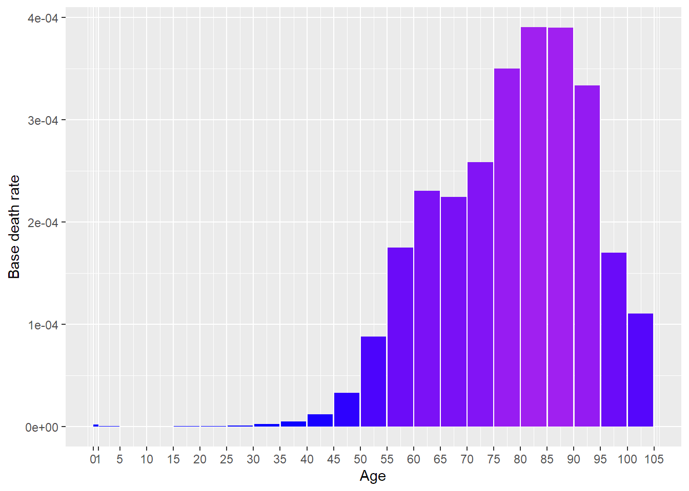
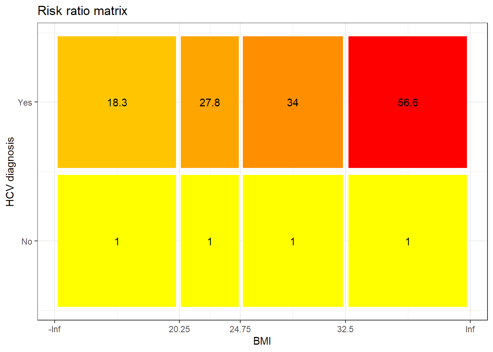
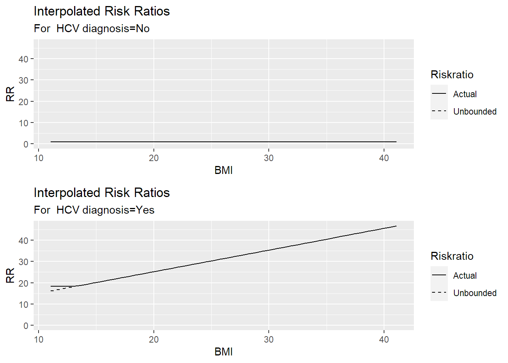
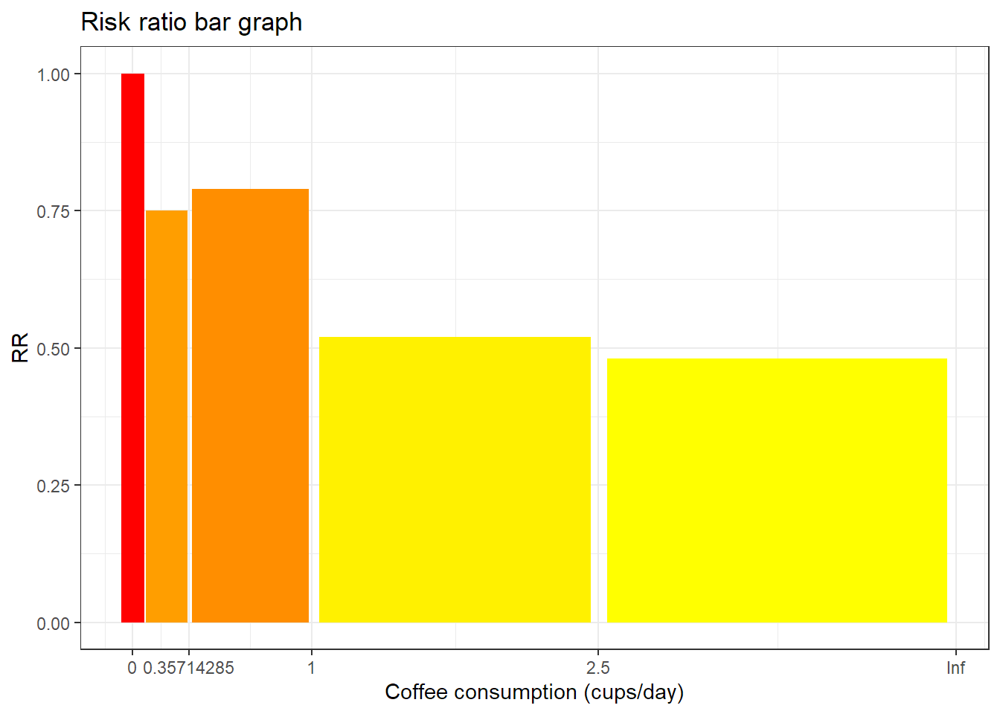
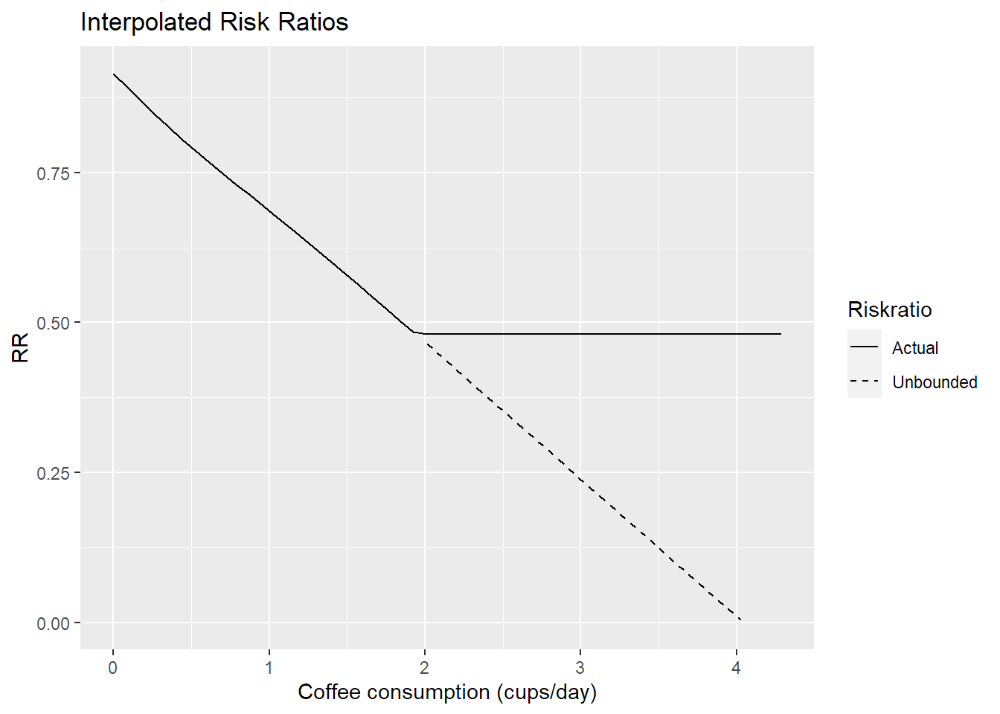
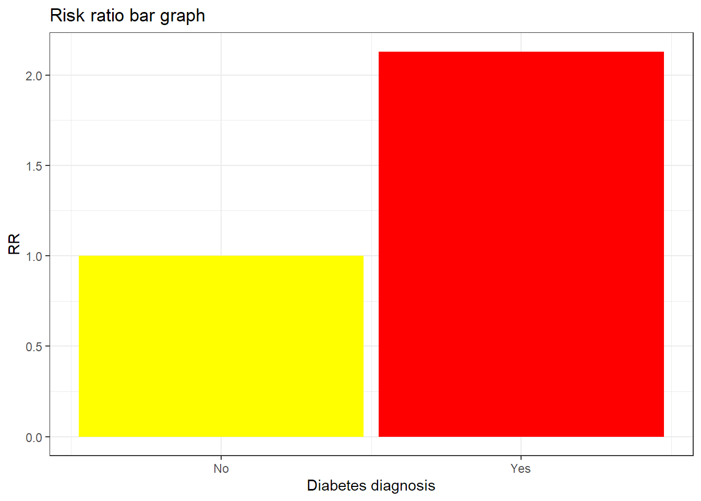
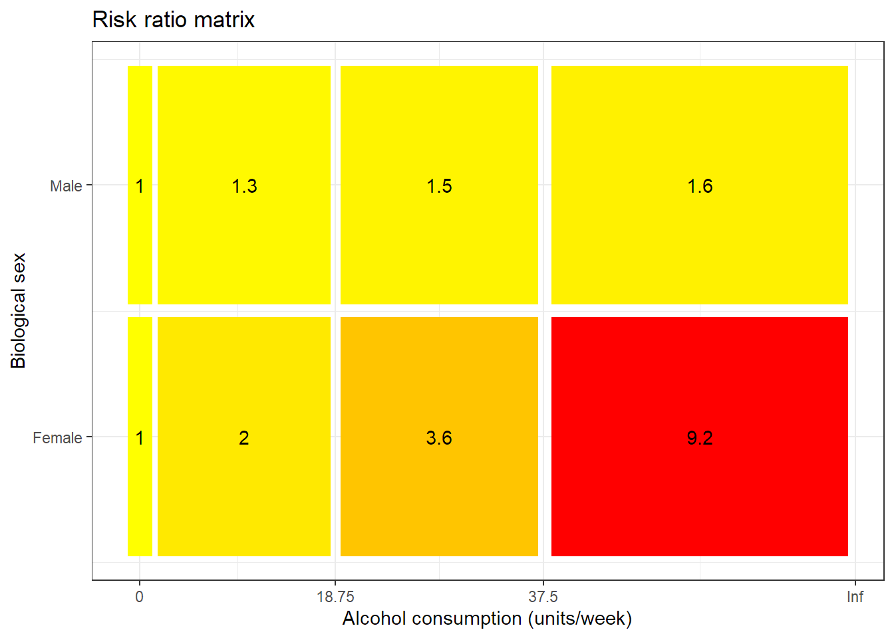
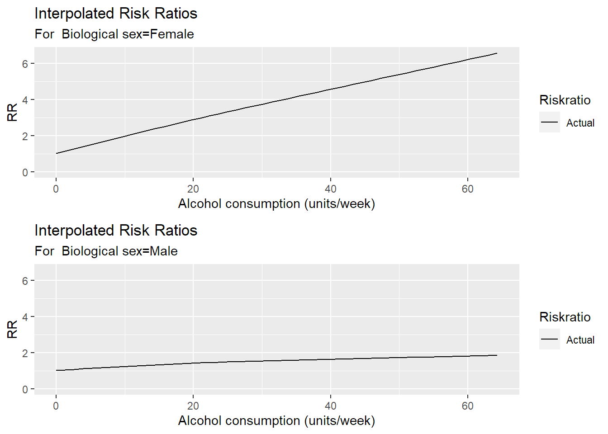

[auto-generated file]
Liver cancer is a death cause. It means that there is a certain probability that one dies from this.
In the model Liver cancer has the following risk factors
In 2014 Liver cancer was responsible for 0.941% of the deaths in the US. Below is a plot of how prevalent the death was for different ages (Xu et al. 2016)

The definition of dying from Liver cancer is to get any of the following ICD codes as the main cause of death on one’s death certificate. The percentage is the proportion of the deaths from Liver cancer who falls under the ICD code
The combined risk ratio of all risk factors is computed using the formula
\[ RR=RR_{\text{BMI,HCV}} \cdot RR_{\text{Coffee}} \cdot RR_{\text{Diabetes}} \cdot RR_{\text{Alcohol,Sex}} \]
The normalization factor is based on the joint distribution of all the risk factors and is computed using the formula
\[ P=P_{\text{BMI,HCV}} \cdot P_{\text{Coffee}} \cdot P_{\text{Diabetes}} \cdot P_{\text{Alcohol,Sex}} \]
BMI and HCV diagnosis are a group of risk factors for Liver cancer.
Below is a plot of the risk ratios we have taken from the literature alterated to fit our model

Because the variable BMI is numeric, we have computed a smoothed approximationfor every value of the other variables. 
Coffee consumption is a risk factor for Liver cancer.
Below is a plot of the risk ratios we have taken from the literature alterated to fit our model

Because the variable Coffee consumption is numeric, we have computed a smoothed approximation. 
Diabetes diagnosis is a risk factor for Liver cancer.
Below is a plot of the risk ratios we have taken from the literature alterated to fit our model

Alcohol consumption and Biological sex are a group of risk factors for Liver cancer.
Below is a plot of the risk ratios we have taken from the literature alterated to fit our model

Because the variable Alcohol consumption is numeric, we have computed a smoothed approximationfor every value of the other variables. 
“ICD Order Files 2014.” n.d. https://www.cdc.gov/nchs/icd/icd10cm.htm.
Xu, Jiaquan, Kenneth D Kochanek, Sherry L Murphy, and Betzaida Tejada-Vera. 2016. “Deaths: Final Data for 2014.” National Vital Statistics Reports 65 (4).